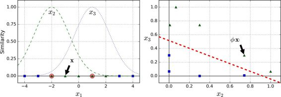
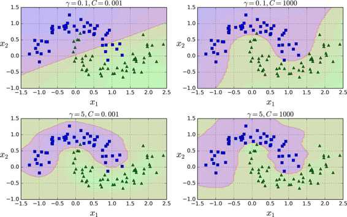

五、支持向量机
译者：@QiaoXie
支持向量机（SVM）是个非常强大并且有多种功能的机器学习模型，能够做线性或者非线性的分类，回归，甚至异常值检测。机器学习领域中最为流行的模型之一，是任何学习机器学习的人必备的工具。SVM 特别适合应用于复杂但中小规模数据集的分类问题。
本章节将阐述支持向量机的核心概念，怎么使用这个强大的模型，以及它是如何工作的。
线性支持向量机分类
SVM 的基本思想能够用一些图片来解释得很好，图 5-1 展示了我们在第4章结尾处介绍的鸢尾花数据集的一部分。这两个种类能够被非常清晰，非常容易的用一条直线分开（即线性可分的）。左边的图显示了三种可能的线性分类器的判定边界。其中用虚线表示的线性模型判定边界很差，甚至不能正确地划分类别。另外两个线性模型在这个数据集表现的很好，但是它们的判定边界很靠近样本点，在新的数据上可能不会表现的很好。相比之下，右边图中 SVM 分类器的判定边界实线，不仅分开了两种类别，而且还尽可能地远离了最靠近的训练数据点。你可以认为 SVM 分类器在两种类别之间保持了一条尽可能宽敞的街道（图中平行的虚线），其被称为最大间隔分类。

我们注意到添加更多的样本点在“街道”外并不会影响到判定边界，因为判定边界是由位于“街道”边缘的样本点确定的，这些样本点被称为“支持向量”（图 5-1 中被圆圈圈起来的点）
警告
SVM 对特征缩放比较敏感，可以看到图 5-2：左边的图中，垂直的比例要更大于水平的比例，所以最宽的“街道”接近水平。但对特征缩放后（例如使用Scikit-Learn的StandardScaler），判定边界看起来要好得多，如右图。
软间隔分类
如果我们严格地规定所有的数据都不在“街道”上，都在正确地两边，称为硬间隔分类，硬间隔分类有两个问题，第一，只对线性可分的数据起作用，第二，对异常点敏感。图 5-3 显示了只有一个异常点的鸢尾花数据集：左边的图中很难找到硬间隔，右边的图中判定边界和我们之前在图 5-1 中没有异常点的判定边界非常不一样，它很难一般化。

为了避免上述的问题，我们更倾向于使用更加软性的模型。目的在保持“街道”尽可能大和避免间隔违规（例如：数据点出现在“街道”中央或者甚至在错误的一边）之间找到一个良好的平衡。这就是软间隔分类。
在 Scikit-Learn 库的 SVM 类，你可以用C超参数（惩罚系数）来控制这种平衡：较小的C会导致更宽的“街道”，但更多的间隔违规。图 5-4 显示了在非线性可分隔的数据集上，两个软间隔SVM分类器的判定边界。左边图中，使用了较大的C值，导致更少的间隔违规，但是间隔较小。右边的图，使用了较小的C值，间隔变大了，但是许多数据点出现在了“街道”上。然而，第二个分类器似乎泛化地更好：事实上，在这个训练数据集上减少了预测错误，因为实际上大部分的间隔违规点出现在了判定边界正确的一侧。
提示
如果你的 SVM 模型过拟合，你可以尝试通过减小超参数
C去调整。
以下的 Scikit-Learn 代码加载了内置的鸢尾花（Iris）数据集，缩放特征，并训练一个线性 SVM 模型（使用LinearSVC类，超参数C=1，hinge 损失函数）来检测 Virginica 鸢尾花，生成的模型在图 5-4 的右图。
import numpy as np
from sklearn import datasets
from sklearn.pipeline import Pipeline
from sklearn.preprocessing import StandardScaler
from sklearn.svm import LinearSVC
iris = datasets.load_iris()
X = iris["data"][:, (2, 3)] # petal length, petal width
y = (iris["target"] == 2).astype(np.float64) # Iris-Virginica
svm_clf = Pipeline((
("scaler", StandardScaler()),
("linear_svc", LinearSVC(C=1, loss="hinge")),
))
svm_clf.fit(X, y)
Then, as usual, you can use the model to make predictions:
>>> svm_clf.predict([[5.5, 1.7]])
array([ 1.])
注
不同于 Logistic 回归分类器，SVM 分类器不会输出每个类别的概率。
作为一种选择，你可以在 SVC 类，使用SVC(kernel="linear", C=1)，但是它比较慢，尤其在较大的训练集上，所以一般不被推荐。另一个选择是使用SGDClassifier类，即SGDClassifier(loss="hinge", alpha=1/(m*C))。它应用了随机梯度下降（SGD 见第四章）来训练一个线性 SVM 分类器。尽管它不会和LinearSVC一样快速收敛，但是对于处理那些不适合放在内存的大数据集是非常有用的，或者处理在线分类任务同样有用。
提示
LinearSVC要使偏置项规范化，首先你应该集中训练集减去它的平均数。如果你使用了StandardScaler，那么它会自动处理。此外，确保你设置loss参数为hinge，因为它不是默认值。最后，为了得到更好的效果，你需要将dual参数设置为False，除非特征数比样本量多（我们将在本章后面讨论二元性）
非线性支持向量机分类
尽管线性 SVM 分类器在许多案例上表现得出乎意料的好，但是很多数据集并不是线性可分的。一种处理非线性数据集方法是增加更多的特征，例如多项式特征（正如你在第4章所做的那样）；在某些情况下可以变成线性可分的数据。在图 5-5的左图中，它只有一个特征x1的简单的数据集，正如你看到的，该数据集不是线性可分的。但是如果你增加了第二个特征 x2=(x1)^2，产生的 2D 数据集就能很好的线性可分。
为了实施这个想法，通过 Scikit-Learn，你可以创建一个流水线（Pipeline）去包含多项式特征（PolynomialFeatures）变换（在 121 页的“Polynomial Regression”中讨论），然后一个StandardScaler和LinearSVC。让我们在卫星数据集（moons datasets）测试一下效果。
from sklearn.datasets import make_moons
from sklearn.pipeline import Pipeline
from sklearn.preprocessing import PolynomialFeatures
polynomial_svm_clf = Pipeline((
("poly_features", PolynomialFeatures(degree=3)),
("scaler", StandardScaler()),
("svm_clf", LinearSVC(C=10, loss="hinge"))
))
polynomial_svm_clf.fit(X, y)
多项式核
添加多项式特征很容易实现，不仅仅在 SVM，在各种机器学习算法都有不错的表现，但是低次数的多项式不能处理非常复杂的数据集，而高次数的多项式却产生了大量的特征，会使模型变得慢。
幸运的是，当你使用 SVM 时，你可以运用一个被称为“核技巧”（kernel trick）的神奇数学技巧。它可以取得就像你添加了许多多项式，甚至有高次数的多项式，一样好的结果。所以不会大量特征导致的组合爆炸，因为你并没有增加任何特征。这个技巧可以用 SVC 类来实现。让我们在卫星数据集测试一下效果。
from sklearn.svm import SVC
poly_kernel_svm_clf = Pipeline((
("scaler", StandardScaler()),
("svm_clf", SVC(kernel="poly", degree=3, coef0=1, C=5))
))
poly_kernel_svm_clf.fit(X, y)
这段代码用3阶的多项式核训练了一个 SVM 分类器，即图 5-7 的左图。右图是使用了10阶的多项式核 SVM 分类器。很明显，如果你的模型过拟合，你可以减小多项式核的阶数。相反的，如果是欠拟合，你可以尝试增大它。超参数coef0控制了高阶多项式与低阶多项式对模型的影响。
通用的方法是用网格搜索（grid search 见第 2 章）去找到最优超参数。首先进行非常粗略的网格搜索一般会很快，然后在找到的最佳值进行更细的网格搜索。对每个超参数的作用有一个很好的理解可以帮助你在正确的超参数空间找到合适的值。
增加相似特征
另一种解决非线性问题的方法是使用相似函数（similarity funtion）计算每个样本与特定地标（landmark）的相似度。例如，让我们来看看前面讨论过的一维数据集，并在x1=-2和x1=1之间增加两个地标（图 5-8 左图）。接下来，我们定义一个相似函数，即高斯径向基函数（Gaussian Radial Basis Function，RBF），设置γ = 0.3（见公式 5-1）
公式 5-1 RBF
它是个从 0 到 1 的钟型函数，值为 0 的离地标很远，值为 1 的在地标上。现在我们准备计算新特征。例如，我们看一下样本x1=-1：它距离第一个地标距离是 1，距离第二个地标是 2。因此它的新特征为x2=exp(-0.3 × (1^2))≈0.74和x3=exp(-0.3 × (2^2))≈0.30。图 5-8 右边的图显示了特征转换后的数据集（删除了原始特征），正如你看到的，它现在是线性可分了。

你可能想知道如何选择地标。最简单的方法是在数据集中的每一个样本的位置创建地标。这将产生更多的维度从而增加了转换后数据集是线性可分的可能性。但缺点是，m个样本，n个特征的训练集被转换成了m个实例，m个特征的训练集（假设你删除了原始特征）。这样一来，如果你的训练集非常大，你最终会得到同样大的特征。
高斯 RBF 核
就像多项式特征法一样，相似特征法对各种机器学习算法同样也有不错的表现。但是在所有额外特征上的计算成本可能很高，特别是在大规模的训练集上。然而，“核” 技巧再一次显现了它在 SVM 上的神奇之处：高斯核让你可以获得同样好的结果成为可能，就像你在相似特征法添加了许多相似特征一样，但事实上，你并不需要在RBF添加它们。我们使用 SVC 类的高斯 RBF 核来检验一下。
rbf_kernel_svm_clf = Pipeline((
("scaler", StandardScaler()),
("svm_clf", SVC(kernel="rbf", gamma=5, C=0.001))
))
rbf_kernel_svm_clf.fit(X, y)
这个模型在图 5-9 的左下角表示。其他的图显示了用不同的超参数gamma (γ)和C训练的模型。增大γ使钟型曲线更窄（图 5-8 左图），导致每个样本的影响范围变得更小：即判定边界最终变得更不规则，在单个样本周围环绕。相反的，较小的γ值使钟型曲线更宽，样本有更大的影响范围，判定边界最终则更加平滑。所以γ是可调整的超参数：如果你的模型过拟合，你应该减小γ值，若欠拟合，则增大γ（与超参数C相似）。

还有其他的核函数，但很少使用。例如，一些核函数是专门用于特定的数据结构。在对文本文档或者 DNA 序列进行分类时，有时会使用字符串核（String kernels）（例如，使用 SSK 核（string subsequence kernel）或者基于编辑距离（Levenshtein distance）的核函数）。
提示
这么多可供选择的核函数，你如何决定使用哪一个？一般来说，你应该先尝试线性核函数（记住
LinearSVC比SVC(kernel="linear")要快得多），尤其是当训练集很大或者有大量的特征的情况下。如果训练集不太大，你也可以尝试高斯径向基核（Gaussian RBF Kernel），它在大多数情况下都很有效。如果你有空闲的时间和计算能力，你还可以使用交叉验证和网格搜索来试验其他的核函数，特别是有专门用于你的训练集数据结构的核函数。
计算复杂性
LinearSVC类基于liblinear库，它实现了线性 SVM 的优化算法。它并不支持核技巧，但是它样本和特征的数量几乎是线性的：训练时间复杂度大约为O(m × n)。
如果你要非常高的精度，这个算法需要花费更多时间。这是由容差值超参数ϵ（在 Scikit-learn 称为tol）控制的。大多数分类任务中，使用默认容差值的效果是已经可以满足一般要求。
SVC 类基于libsvm库，它实现了支持核技巧的算法。训练时间复杂度通常介于O(m^2 × n)和O(m^3 × n)之间。不幸的是，这意味着当训练样本变大时，它将变得极其慢（例如，成千上万个样本）。这个算法对于复杂但小型或中等数量的数据集表现是完美的。然而，它能对特征数量很好的缩放，尤其对稀疏特征来说（sparse features）（即每个样本都有一些非零特征）。在这个情况下，算法对每个样本的非零特征的平均数量进行大概的缩放。表 5-1 对 Scikit-learn 的 SVM 分类模型进行比较。
SVM 回归
正如我们之前提到的，SVM 算法应用广泛：不仅仅支持线性和非线性的分类任务，还支持线性和非线性的回归任务。技巧在于逆转我们的目标：限制间隔违规的情况下，不是试图在两个类别之间找到尽可能大的“街道”（即间隔）。SVM 回归任务是限制间隔违规情况下，尽量放置更多的样本在“街道”上。“街道”的宽度由超参数ϵ控制。图 5-10 显示了在一些随机生成的线性数据上，两个线性 SVM 回归模型的训练情况。一个有较大的间隔（ϵ=1.5），另一个间隔较小（ϵ=0.5）。

添加更多的数据样本在间隔之内并不会影响模型的预测，因此，这个模型认为是不敏感的（ϵ-insensitive）。
你可以使用 Scikit-Learn 的LinearSVR类去实现线性 SVM 回归。下面的代码产生的模型在图 5-10 左图（训练数据需要被中心化和标准化）
from sklearn.svm import LinearSVR
svm_reg = LinearSVR(epsilon=1.5)
svm_reg.fit(X, y)
处理非线性回归任务，你可以使用核化的 SVM 模型。比如，图 5-11 显示了在随机二次方的训练集，使用二次方多项式核函数的 SVM 回归。左图是较小的正则化（即更大的C值），右图则是更大的正则化（即小的C值）

下面的代码的模型在图 5-11，其使用了 Scikit-Learn 的SVR类（支持核技巧）。在回归任务上，SVR类和SVC类是一样的，并且LinearSVR是和LinearSVC等价。LinearSVR类和训练集的大小成线性（就像LinearSVC类），当训练集变大，SVR会变的很慢（就像SVC类）
from sklearn.svm import SVR
svm_poly_reg = SVR(kernel="poly", degree=2, C=100, epsilon=0.1)
svm_poly_reg.fit(X, y)
注
SVM 也可以用来做异常值检测，详情见 Scikit-Learn 文档
背后机制
这个章节从线性 SVM 分类器开始，将解释 SVM 是如何做预测的并且算法是如何工作的。如果你是刚接触机器学习，你可以跳过这个章节，直接进入本章末尾的练习。等到你想深入了解 SVM，再回头研究这部分内容。
首先，关于符号的约定：在第 4 章，我们将所有模型参数放在一个矢量θ里，包括偏置项θ0，θ1到θn的输入特征权重，和增加一个偏差输入x0 = 1到所有样本。在本章中，我们将使用一个不同的符号约定，在处理 SVM 上，这更方便，也更常见：偏置项被命名为b，特征权重向量被称为w，在输入特征向量中不再添加偏置特征。
决策函数和预测
线性 SVM 分类器通过简单地计算决策函数 来预测新样本的类别：如果结果是正的，预测类别ŷ是正类，为 1，否则他就是负类，为 0。见公式 5-2
图 5-12 显示了和图 5-4 右边图模型相对应的决策函数：因为这个数据集有两个特征（花瓣的宽度和花瓣的长度），所以是个二维的平面。决策边界是决策函数等于 0 的点的集合，图中两个平面的交叉处，即一条直线（图中的实线）
虚线表示的是那些决策函数等于 1 或 -1 的点：它们平行，且到决策边界的距离相等，形成一个间隔。训练线性 SVM 分类器意味着找到w值和b值使得这一个间隔尽可能大，同时避免间隔违规（硬间隔）或限制它们（软间隔）
训练目标
看下决策函数的斜率：它等于权重向量的范数 。如果我们把这个斜率除于 2，决策函数等于 ±1 的点将会离决策边界原来的两倍大。换句话，即斜率除于 2，那么间隔将增加两倍。在图 5-13 中，2D 形式比较容易可视化。权重向量w越小，间隔越大。
所以我们的目标是最小化 ，从而获得大的间隔。然而，如果我们想要避免间隔违规（硬间隔），对于正的训练样本，我们需要决策函数大于 1，对于负训练样本，小于 -1。若我们对负样本（即 ）定义 ，对正样本（即 ）定义 ，那么我们可以对所有的样本表示为 。
因此，我们可以将硬间隔线性 SVM 分类器表示为公式 5-3 中的约束优化问题
注
等于 ，我们最小化 ，而不是最小化 。这会给我们相同的结果（因为最小化
w值和b值，也是最小化该值一半的平方），但是 有很好又简单的导数（只有w）， 在w=0处是不可微的。优化算法在可微函数表现得更好。
为了获得软间隔的目标，我们需要对每个样本应用一个松弛变量（slack variable）。 表示了第i个样本允许违规间隔的程度。我们现在有两个不一致的目标：一个是使松弛变量尽可能的小，从而减小间隔违规，另一个是使1/2 w·w尽量小，从而增大间隔。这时C超参数发挥作用：它允许我们在两个目标之间权衡。我们得到了公式 5-4 的约束优化问题。

二次规划
硬间隔和软间隔都是线性约束的凸二次规划优化问题。这些问题被称之为二次规划（QP）问题。现在有许多解决方案可以使用各种技术来处理 QP 问题，但这超出了本书的范围。一般问题的公式在公式 5-5 给出。
注意到表达式Ap ≤ b实际上定义了 约束： ， 是个包含了A的第i行元素的向量，是b的第i个元素。
可以很容易地看到，如果你用以下的方式设置 QP 的参数，你将获得硬间隔线性 SVM 分类器的目标：
- ，
n表示特征的数量（+1 是偏置项） - ，
m表示训练样本数量 H是 单位矩阵，除了左上角为 0（忽略偏置项）f = 0，一个全为 0 的 维向量- ，一个全为 1 的 维向量
- ， 等于
 带一个额外的偏置特征 ！
带一个额外的偏置特征 ！
所以训练硬间隔线性 SVM 分类器的一种方式是使用现有的 QP 解决方案，即上述的参数。由此产生的向量p将包含偏置项 和特征权重 。同样的，你可以使用 QP 解决方案来解决软间隔问题（见本章最后的练习）
然而，使用核技巧我们将会看到一个不同的约束优化问题。
对偶问题
给出一个约束优化问题，即原始问题（primal problem），它可能表示不同但是和另一个问题紧密相连，称为对偶问题（Dual Problem）。对偶问题的解通常是对原始问题的解给出一个下界约束，但在某些条件下，它们可以获得相同解。幸运的是，SVM 问题恰好满足这些条件，所以你可以选择解决原始问题或者对偶问题，两者将会有相同解。公式 5-6 表示了线性 SVM 的对偶形式（如果你对怎么从原始问题获得对偶问题感兴趣，可以看下附录 C）
一旦你找到最小化公式的向量α（使用 QP 解决方案），你可以通过使用公式 5-7 的方法计算w和b，从而使原始问题最小化。
当训练样本的数量比特征数量小的时候，对偶问题比原始问题要快得多。更重要的是，它让核技巧成为可能，而原始问题则不然。那么这个核技巧是怎么样的呢？
核化支持向量机
假设你想把一个 2 次多项式变换应用到二维空间的训练集（例如卫星数据集），然后在变换后的训练集上训练一个线性SVM分类器。公式 5-8 显示了你想应用的 2 次多项式映射函数ϕ。
注意到转换后的向量是 3 维的而不是 2 维。如果我们应用这个 2 次多项式映射，然后计算转换后向量的点积（见公式 5-9），让我们看下两个 2 维向量a和b会发生什么。
转换后向量的点积等于原始向量点积的平方：
关键点是：如果你应用转换ϕ到所有训练样本，那么对偶问题（见公式 5-6）将会包含点积  。但如果
。但如果ϕ像在公式 5-8 定义的 2 次多项式转换，那么你可以将这个转换后的向量点积替换成 。所以实际上你根本不需要对训练样本进行转换：仅仅需要在公式 5-6 中，将点积替换成它点积的平方。结果将会和你经过麻烦的训练集转换并拟合出线性 SVM 算法得出的结果一样，但是这个技巧使得整个过程在计算上面更有效率。这就是核技巧的精髓。
函数 被称为二次多项式核（polynomial kernel）。在机器学习，核函数是一个能计算点积的函数，并只基于原始向量a和b，不需要计算（甚至知道）转换ϕ。公式 5-10 列举了一些最常用的核函数。
Mercer 定理
根据 Mercer 定理，如果函数
K(a, b)满足一些 Mercer 条件的数学条件(K函数在参数内必须是连续，对称，即K(a, b)=K(b, a)，等)，那么存在函数ϕ，将a和b映射到另一个空间（可能有更高的维度），有 。所以你可以用K作为核函数，即使你不知道ϕ是什么。使用高斯核（Gaussian RBF kernel）情况下，它实际是将每个训练样本映射到无限维空间，所以你不需要知道是怎么执行映射的也是一件好事。注意一些常用核函数（例如 Sigmoid 核函数）并不满足所有的 Mercer 条件，然而在实践中通常表现得很好。
我们还有一个问题要解决。公式 5-7 展示了线性 SVM 分类器如何从对偶解到原始解，如果你应用了核技巧那么得到的公式会包含 。事实上，w必须和 有同样的维度，可能是巨大的维度或者无限的维度，所以你很难计算它。但怎么在不知道w的情况下做出预测？好消息是你可以将公式 5-7 的w代入到新的样本 的决策函数中，你会得到一个在输入向量之间只有点积的方程式。这时，核技巧将派上用场，见公式 5-11
注意到支持向量才满足α(i)≠0，做出预测只涉及计算为支持向量部分的输入样本 的点积，而不是全部的训练样本。当然，你同样也需要使用同样的技巧来计算偏置项b，见公式 5-12
如果你开始感到头痛，这很正常：因为这是核技巧一个不幸的副作用
在线支持向量机
在结束这一章之前，我们快速地了解一下在线 SVM 分类器（回想一下，在线学习意味着增量地学习，不断有新实例）。对于线性SVM分类器，一种方式是使用梯度下降（例如使用SGDClassifire）最小化代价函数，如从原始问题推导出的公式 5-13。不幸的是，它比基于 QP 方式收敛慢得多。
代价函数第一个和会使模型有一个小的权重向量w，从而获得一个更大的间隔。第二个和计算所有间隔违规的总数。如果样本位于“街道”上和正确的一边，或它与“街道”正确一边的距离成比例，则间隔违规等于 0。最小化保证了模型的间隔违规尽可能小并且少。
Hinge 损失
函数
max(0, 1–t)被称为 Hinge 损失函数（如下）。当t≥1时，Hinge 值为 0。如果t<1,它的导数（斜率）为 -1，若t>1，则等于0。在t=1处，它是不可微的，但就像套索回归（Lasso Regression）（参见 130 页套索回归）一样，你仍然可以在t=0时使用梯度下降法（即 -1 到 0 之间任何值）
我们也可以实现在线核化的 SVM。例如使用“增量和递减 SVM 学习”或者“在线和主动的快速核分类器”。但是，这些都是用 Matlab 和 C++ 实现的。对于大规模的非线性问题，你可能需要考虑使用神经网络（见第二部分）
练习
支持向量机背后的基本思想是什么
什么是支持向量
当使用 SVM 时，为什么标准化输入很重要？
分类一个样本时，SVM 分类器能够输出一个置信值吗？概率呢？
在一个有数百万训练样本和数百特征的训练集上，你是否应该使用 SVM 原始形式或对偶形式来训练一个模型？
假设你用 RBF 核来训练一个 SVM 分类器，如果对训练集欠拟合：你应该增大或者减小
γ吗？调整参数C呢？使用现有的 QP 解决方案，你应该怎么样设置 QP 参数（
H，f，A，和b）去解决一个软间隔线性 SVM 分类器问题？在一个线性可分的数据集训练一个
LinearSVC，并在同一个数据集上训练一个SVC和SGDClassifier，看它们是否产生了大致相同效果的模型。在 MNIST 数据集上训练一个 SVM 分类器。因为 SVM 分类器是二元的分类，你需要使用一对多（one-versus-all）来对 10 个数字进行分类。你可能需要使用小的验证集来调整超参数，以加快进程。最后你能达到多少准确度？
在加利福尼亚住宅（California housing）数据集上训练一个 SVM 回归模型
这些练习的答案在附录 A。